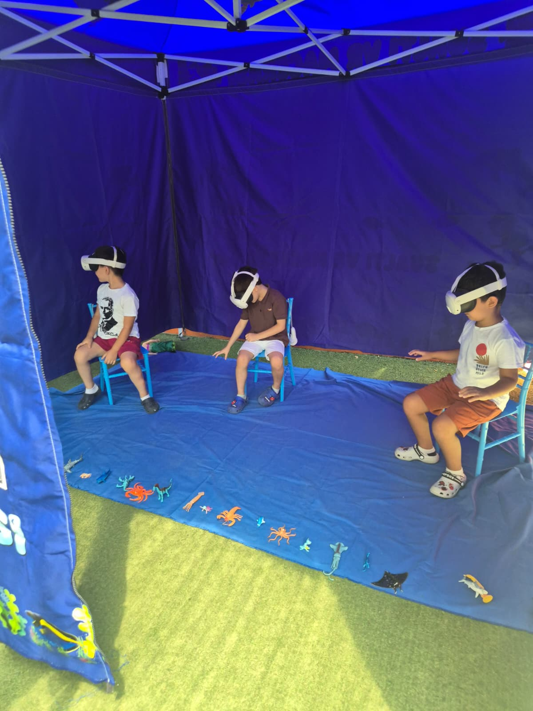
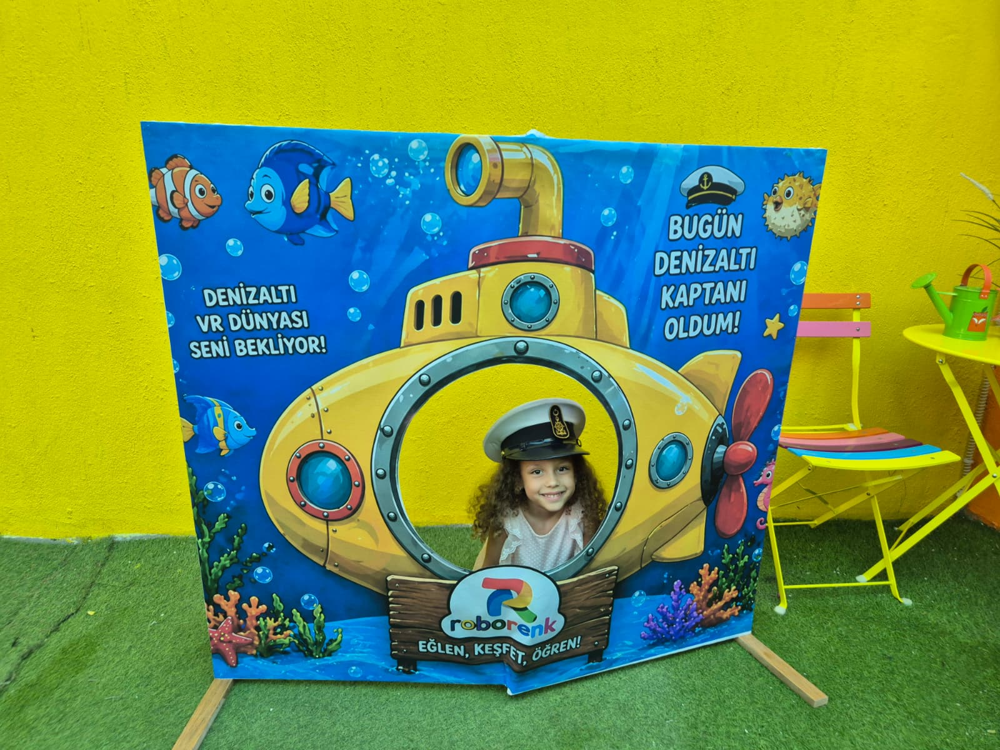
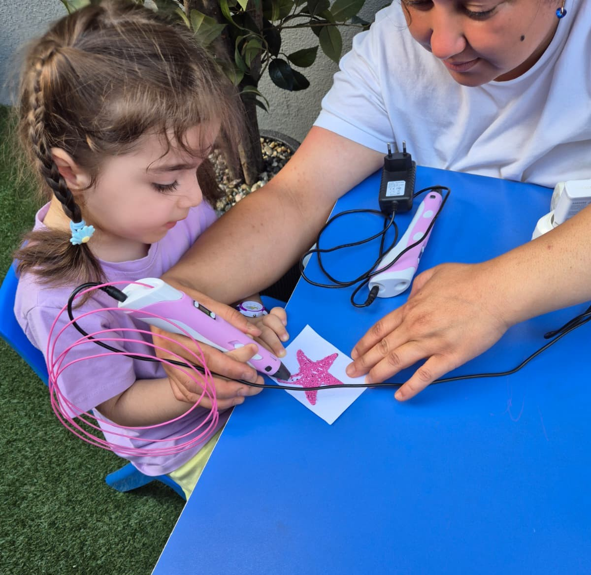

EĞLENCEYİ VE TEKNOLOJİYİ
SİZE GETİRİYORUZ!
Roborenk ile Keşfet, Eğlen, Öğren! Okulunuzda veya etkinliğinizde, sualtının gizemli dünyasını deneyimleyin.
Roborenk ile Keşfet, Eğlen, Öğren! Okulunuzda veya etkinliğinizde, sualtının gizemli dünyasını deneyimleyin.
Sualtı dünyasını sanal gerçeklik ile keşfedin, yunuslarla yüzün!
Denizaltı kaptanı şapkanı tak ve bu eşsiz anı ölümsüzleştir.
Kendi renkli deniz canlılarını 3D kalemlerle üç boyutlu tasarla.
Okullarınıza ve etkinliklerinize kurduğumuz gezici istasyonlarımızla çocuklara unutulmaz bir teknoloji ve hayal gücü şöleni sunuyoruz.
Sanal gerçeklik teknolojisiyle çocukları okyanusun derinliklerine indiriyor, su altı canlılarıyla büyüleyici bir keşfe çıkarıyoruz.
Öğrenciler rengarenk filamentler kullanarak kendi 3D okyanus canlılarını tasarlıyor. İnce motor becerileri ve tasarım yetenekleri gelişiyor.
Özel tasarım denizaltı dekorumuzla çocukları birer denizaltı kaptanına dönüştürüyor ve bu güzel macerayı ölümsüzleştiriyoruz.
Çocukların eğlence dolu ve keşif dolu anlarından bazıları


